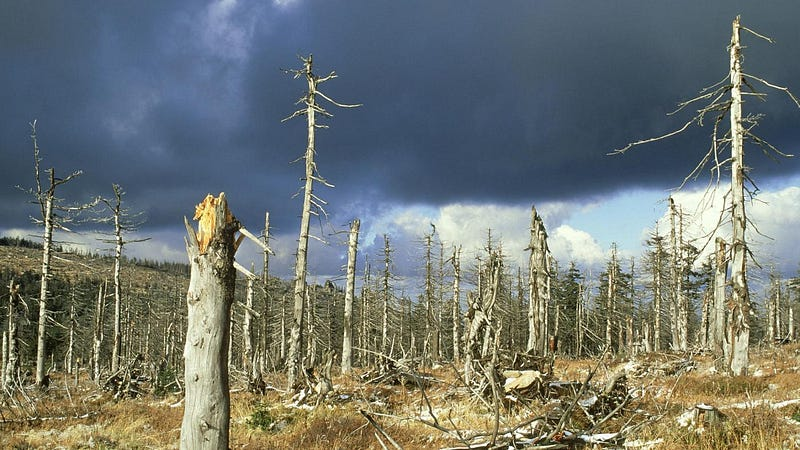
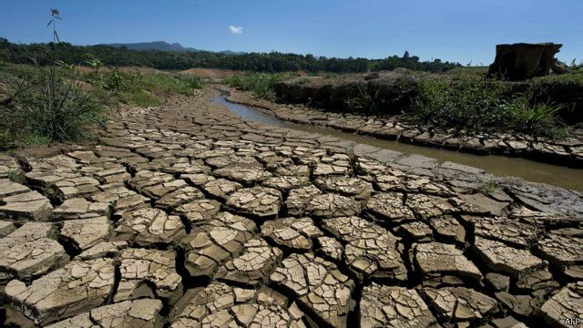

Elemen 02
Pencemaran Udara: Kondisi ketika udara mengandung zat berbahaya dalam konsentrasi yang melampaui ambang batas aman bagi kesehatan dan lingkungan. Zat tersebut dapat berupa partikel padat (debu, asap), gas beracun seperti karbon monoksida (CO), sulfur dioksida (SO2), nitrogen dioksida (NO2), serta senyawa organik volatil. Dalam skala global, polusi udara menjadi salah satu faktor risiko utama penyakit tidak menular dan penurunan kualitas lingkungan hidup.
Estimasi kerugian ekonomi atau sekitar 5,03% dari produk domestik bruto (PDB)
Sumber: journal.unnes.ac.idKendaraan berbahan bakar fosil menghasilkan emisi karbon monoksida (CO) dan partikel halus (PM2.5).
Sektor transportasi sering menjadi kontributor terbesar polusi di kota padat.
Kegiatan industri melepaskan berbagai polutan berbahaya tergantung jenis produksinya.
Tanpa sistem filtrasi yang optimal, emisi pabrik mencemari udara secara luas.
Membakar sampah melepaskan zat dioksin yang sangat beracun langsung ke atmosfer.
Gangguan pernapasan (Asma, Bronkitis), iritasi mata, dan risiko penyakit jantung.

Menghambat fotosintesis tanaman dan memicu terjadinya hujan asam.

Peningkatan efek rumah kaca yang memicu perubahan iklim ekstrem global.
Meningkatnya biaya pengobatan negara dan penurunan produktivitas kerja akibat gangguan kesehatan.
Menurunnya kualitas hidup dan terbatasnya aktivitas luar ruangan bagi anak-anak serta lansia.
Perubahan kecil hari ini untuk langit biru di masa depan, mulailah dari dirimu, mulailah dari sekarang.
Hindari membakar sampah secara terbuka demi menjaga kualitas udara di lingkungan sekitar.
Gunakan transportasi umum atau bersepeda untuk mengurangi polusi emisi kendaraan pribadi.
Kurangi penggunaan listrik berlebih untuk menekan emisi gas buang dari pembangkit listrik fosil.
Menanam pohon di halaman rumah sebagai penyaring polutan alami bagi keluarga Anda.
Jelajahi Lebih
Bumi punya tiga elemen yang saling terhubung. Pelajari semuanya.